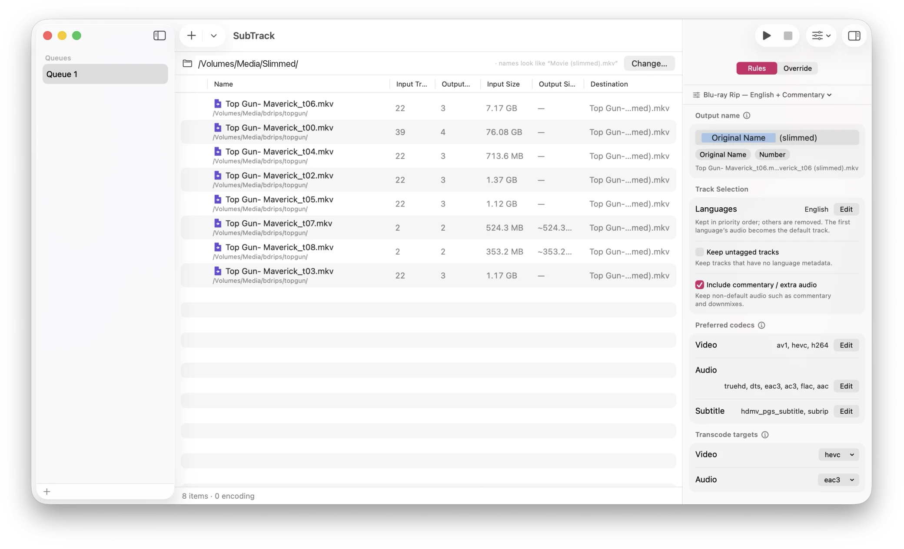
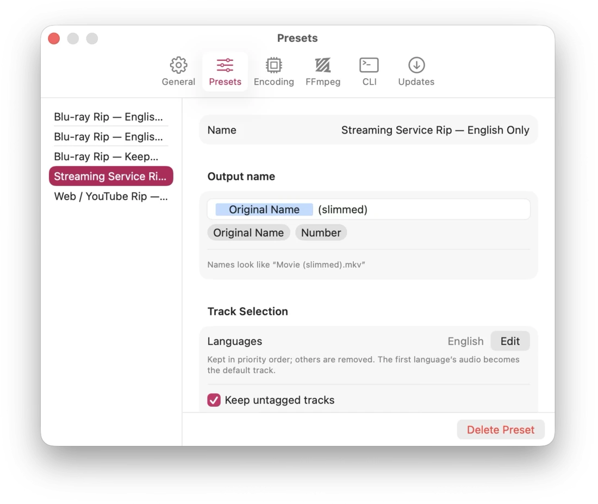
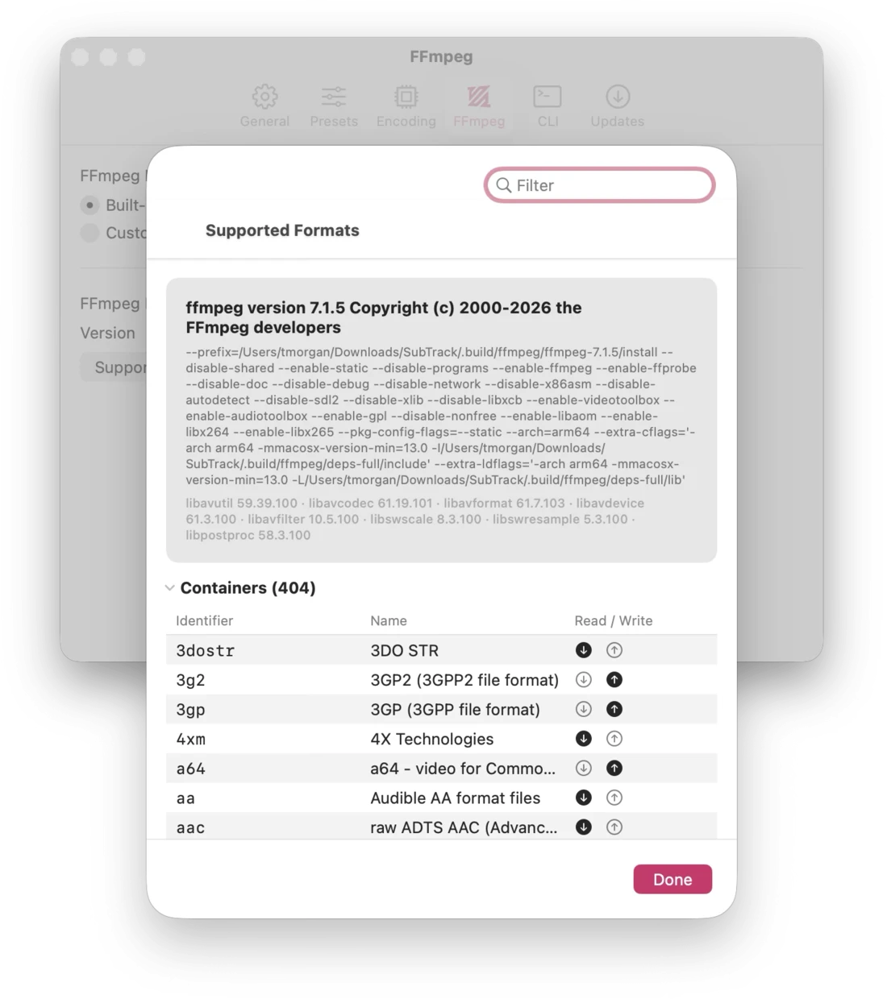

A lossless track slimmer for the Mac
Drop the tracks you don't need.
Keep every bit of the ones you do.
SubTrack strips unwanted audio and subtitle tracks out of your video files by copying, not re-encoding — so a two-hour Blu-ray rip slims down in seconds, with zero quality loss.
Free, both ways · Requires macOS 26.4 or later

Workflow
How it works
-
Queue
Queue up your files
Drag in movies, or a whole folder — SubTrack finds every video inside it and queues them up.
-
Decide
Rules pick the tracks
Keep English, drop the other eleven dubs. Keep or skip commentary. Decide what happens to tracks with no language tag at all.
-
Copy
Slim, without re-encoding
Everything you keep is stream-copied into a new file, bit for bit. Same container, same quality, a fraction of the size.
- 0:0video—hevc2160p HDR10keep
- 0:1audioengtruehd7.1 Atmoskeep
- 0:2audioengac35.1keep
- 0:3audioengac32.0 commentarydrop
- 0:4audiofradts5.1drop
- 0:5audiodeudts5.1drop
- 0:6audiospaac35.1drop
- 0:7subtitleengpgskeep
- 0:8subtitlefrapgsdrop
- 0:9subtitledeupgsdrop
- 0:10subtitlespapgsdrop
- 0:11subtitlejpnpgsdrop
Features
What's in it
-
Lossless by default
Kept tracks are copied, never re-compressed. No generation loss, no hours of encoding — just a smaller file.
-
Rules, not busywork
Choose languages to keep, whether to include commentary and alternate mixes, and what to do with untagged tracks. The same rules apply to every file in the queue.
-
See the plan before it runs
The inspector lists every track in the file and exactly what SubTrack will do with it — keep, drop, or convert. Override any of it per file, per track.
-
Presets that follow you
Save a set of rules as a preset and it syncs to your other Macs through your own iCloud account. Starter presets for Blu-ray, streaming, and web rips are built in.
-
As many queues as you like
Separate queues for movies, TV, and the backlog — each with its own files, rules, preset, and output folder. They come back exactly as you left them.
-
Built for batches
Per-file and overall progress, progress in the Dock, a cap on how many files encode at once, and an activity log when you want the details.
-
Transcoding only when it must
Name the codecs you're happy to keep. If a track you're keeping isn't one of them, SubTrack converts just that track — and tells you up front that it's going to.
-
FFmpeg included
A signed, self-contained FFmpeg ships inside the app. Nothing to install, nothing to keep up to date, no Homebrew.
-
Command line too
The direct download installs
subtrack, the same engine as a CLI, for scripts and overnight jobs.
Screenshots
A look around


Get it
Two builds, one engine
Both are free and sandboxed, and they slim files identically — same rules, same presets, same queues. Three capabilities Apple doesn't permit inside a sandboxed App Store app are the whole difference.
Mac App Store
Installs and updates through the App Store.
- Included: Lossless stream-copy slimming
- Included: Rules, presets, and multiple queues
- Included: Preset sync over iCloud
- Included: Hardware HEVC and H.264 encoding
- Not included: Software x264 and x265 encoding
- Not included: Your own FFmpeg build
-
Not included:
The
subtrackcommand-line tool
Bundled LGPL FFmpeg.
View on the App StoreDirect download
Signed, notarized, and checks for its own updates.
- Included: Lossless stream-copy slimming
- Included: Rules, presets, and multiple queues
- Included: Preset sync over iCloud
- Included: Hardware HEVC and H.264 encoding
- Included: Software x264 and x265 encoding
- Included: Your own FFmpeg build
-
Included:
The
subtrackcommand-line tool
Bundled GPL FFmpeg, with libx264 and libx265.
Download the latest releaseFAQ
Questions
- Does SubTrack re-encode my video?
- Normally, no — that's the whole point. Tracks you keep are copied straight across. SubTrack only transcodes when a track you've kept is in a codec you've said you don't want, and then only that one track. There are no quality sliders, because there's almost never anything to tune. If you're looking to re-encode a library, you want HandBrake; SubTrack is for making files smaller without touching the picture.
- Which version should I get?
-
They slim files identically, so it comes down to three things the App Store doesn't
permit inside a sandboxed app: software x264/x265 encoding, pointing SubTrack at your
own FFmpeg build, and the
subtrackcommand-line tool. Want any of those, take the direct download. Don't need them, take whichever you'd rather install from. - What files can it open?
- Anything the bundled FFmpeg can read — MKV, MP4, M4V, MOV, AVI, TS, and plenty more. The Settings window lists every container and codec the build you're running supports. Output stays in the same container as the source.
- Does it send anything anywhere?
- Your video files never leave your Mac — the bundled FFmpeg is built with networking disabled and can't open a connection at all. There are no accounts, no advertising identifiers, and no tracking. Presets sync only if you're signed into iCloud, through your own private iCloud database that nobody else can read. Two things do go out: crash and performance reports, which aren't linked to your identity, and — in the direct download only — a check with GitHub for new releases, which you can switch off in Settings ▸ Updates. The privacy policy spells all of it out.